Mun làrach-lìn
Tha mi duilich, ach chan eil an earrann seo air eadar-theangachadh gu Gàidhlig fhathast!
Welcome to this online version of Scrabble Gàidhlig! This page allows you to play the game on your devices against either the computer, or with your local friends by swapping your device at every turn.
If you don't know what Scrabble is Wikipedia has a good introduction, where you can also read the rules as well. This page is based on the Scottish Gaelic version of the game produced by Tinderbox Games for An Taigh Cèilidh. You can buy the official product at the Gaelic Books Council's website.
How to play?
When loading the page first you need to select the kind of game you wish to play:
- The Quick Game button will start a game with 2 computer controlled opponents, each of them playing as an Intermediate level player.
- Other options include Solo play, where you try to get as much points as possible on your own
- Hot Seat, where you play with another local friend - giving them your phone or computer after each turn so they can do theirs
- AI play, where you can just relax and watch the computer play against themselves.
- And Expert mode, where you compete with three other computer controlled players who not only know the entire dictionary by heart, they also always play the hand that gives them the most points possible
- Finally, you can also customize the number of human and AI players, including the setting how well the computer players will play the game
- You can also choose between these game modes:
- Duplicate game: Each player plays with the exact same rack and tries to find the best move possible for the current board. Whoever picked the best will win and their word will be the one played. Everyone only gets points for their own word though. Game ends once the rack doesn't have at least one vowel and one consonant.
- Joker mode: The first two players get a joker into their rack. If they play it, it will be replaced with the real letter if it's still in the bag. Otherwise the joker is used as in a normal game. If the joker remains they get it back for the next turn.
- Deus ex machina mode: The players only get 6 letters randomly from the bag. The 7th letter will be assigned from the bag by the computer to allow for a truly great word to be played. The player just needs to find what this word is.
- Super rack mode: The players gets 8 letters in the rack instead of 7. They can still only use a maximum of 7 to make words.
- Combination: You can also combine these game modes.
Once the game is started the two main bits you need to watch for are
- The main board
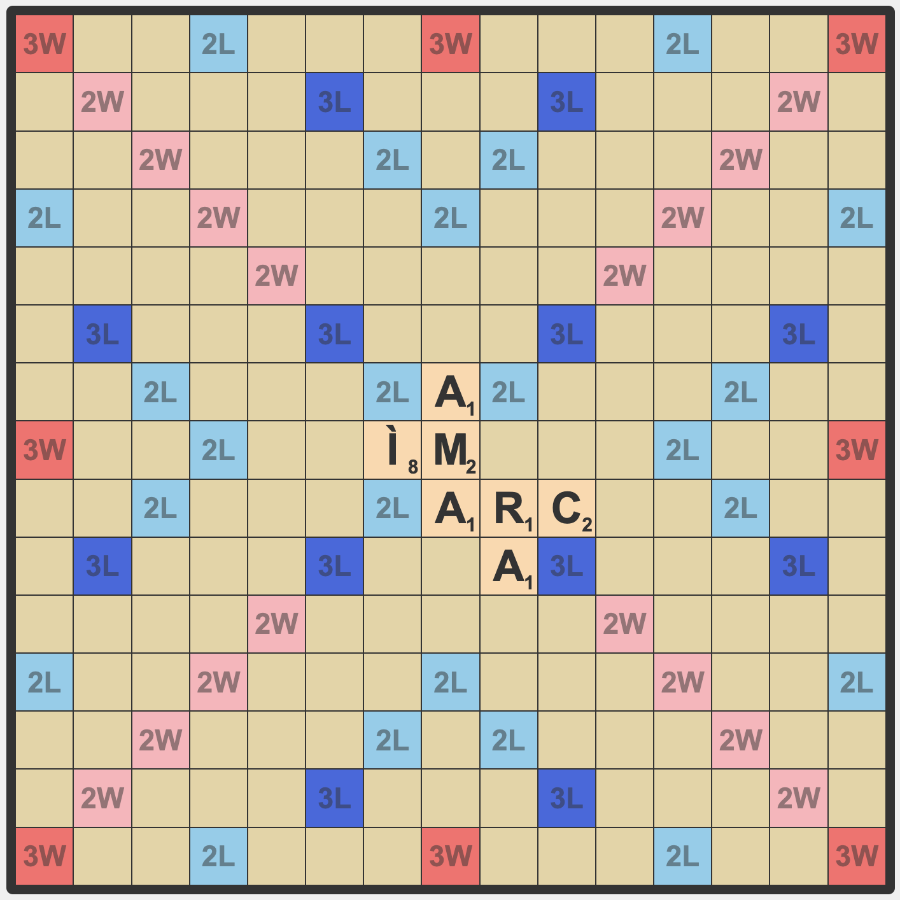
- The letter rack
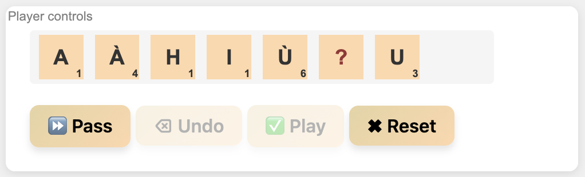
Actions
You can take the following actions:
Pass
To pass simply press the ⏩ Pass button. This will end your turn and allow the next player to make their move. If all players Pass three times in a row the game will end.
Swap
To swap, you need to select some letters from your rack first by clicking on them, or selecting them using your keyboard. Once you do that these letters will become faded. You can then click on 🔄 Swap after which the selected letters will be returned to the bag, and your turn ends. You will receive new letters as well that you can use once it's your turn again. Swapping is only allowed if there are at least still 7 letters in the bag left, afterwards if you cannot make a move you need to ⏩ Pass instead. If you realize you don't want to swap, but actually put down tiles instead you can use the ✖ Reset button to put all tiles back on the rack allowing them to be used to play a word instead.
Play a word
To play a word you first need to select where you want to start to put down your tiles on the board. Once you do an arrow will show you that you'll be playing letters horizontally. Clicking on the tile again will swap this to vertically instead. Once you selected the location and direction you can click the letters from your main rack to put them down in the appropiate location. If you make a mistake you can either press ⌫ Undo to remove the last placed letter, or ✖ Reset which will remove all letters. Once you finished placing your letters click ✅ Play. If the word(s) you played are correct you'll receive your points and the next player can start their turn. If what you played is incorrect, your board will reset and you can try again with another word.
As an example please see the following board:
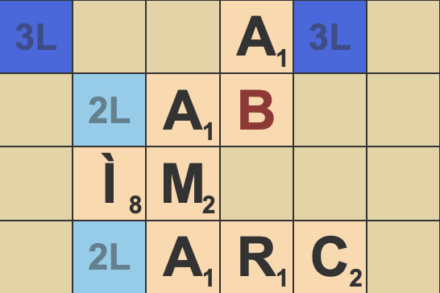
We want to play "LABH" horizontally, from the upper 2L tile on this picture. First
we need to
select
the tile
Then make sure the direction is correct
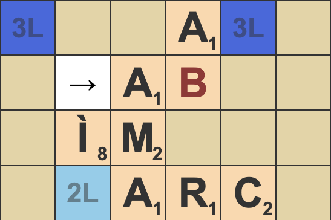
Next we select the "L" tile from our rack either by clicking on it, or by pressing the
"L"
key on the keyboard
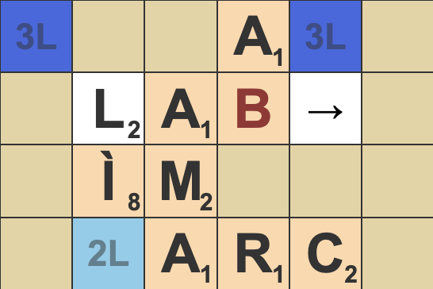
The cursor will skip "AB", as they are already on the board, so you only need to put down
"H"
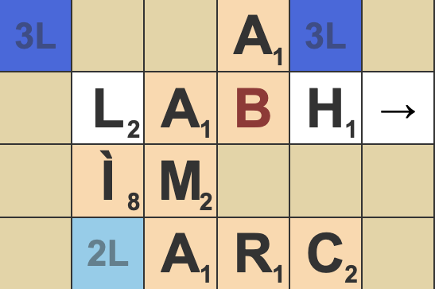
Once this is done, you can press ✅ Play on your main rack.
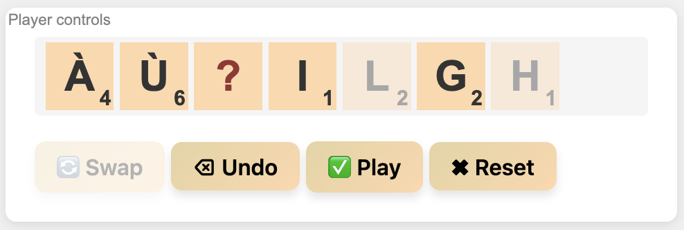
For this play you will receive 18 points. 12 for "LÌ" (The
L will count double), and
6 for "LABH" (The L will count double here as well). Both played
words are using traditional Gaelic spelling, and are present in the Dwelly dictionary
Your played word will also appear in the History section:
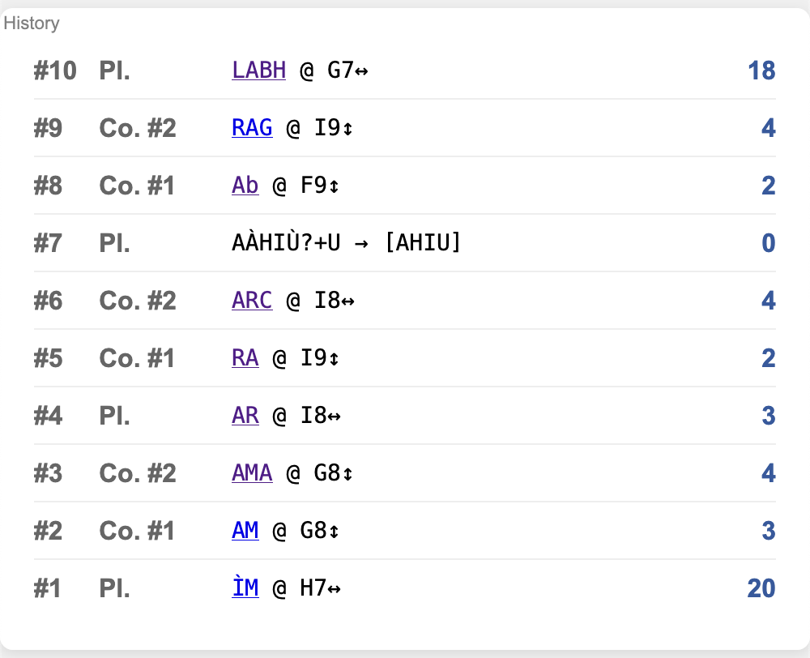
Playing a joker / wildcard tile
Wildcard tiles are marked with a red "?" mark.
These can be used as a replacement for any other Gaelic letter. To play a wildcard tile after clicking on them you will also need to select which letter you want it to be replaced with.
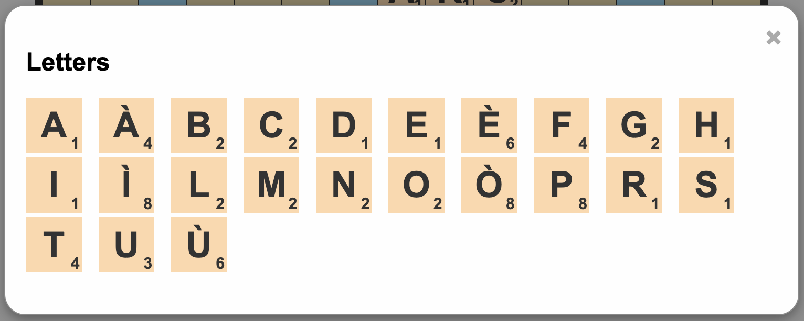
Once the tile is correctly played on the board this option will persist, and the tile will be considered as if it was always the selected letter, and will be marked in red. Wildcard tiles are always worth 0 points regardless of which letter they replace.
Game end
The game ends when one of the following happens:
- One of the players have played all their letters, and there are no more letters in the bag
- Each player has ⏩ Passed three times in a row
Once the game ends you will be able to see everyone's rack, the final score, and the history will show not only what each player played, but also what their rack was when they did it.
If you wish to forfeit the game you can also press ♻️ Reset game on the Global Controls panel, which will immediately reset the board back to start and you can start a new game.
Word list
There is no official Gaelic wordlist for Scrabble (yet), this website uses the wordlist originally compiled by Kevin Scannell from the database of Am Faclair Beag, with a few modifications. The wordlist is specifically lenient, and contains words from the traditional Dwelly dictionary, which is now more than a 100 years old, as well as words collected from the modern era adhering to the 1981 Gaelic Orthographic Convention (GOC) and its more recent revisions.
The current wordlist contains 122,045 words. To help both Gaelic learners and people wondering why a word the computer done was accepted, each played word in the History section will have link pointing to Am Faclair Beag where you can check the source of the word. For traditional words from Dwelly, the website will also allow you to go back to the original source as well.
As an example let's say the computer has played the word "OIRGHIOS". You can click on the word in the History section:
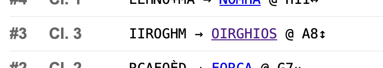
If you click on the link you'll be redirected to the dictionary, where you can see that the word (meaning Cheer and Mess) was originally compiled in Dwelly:
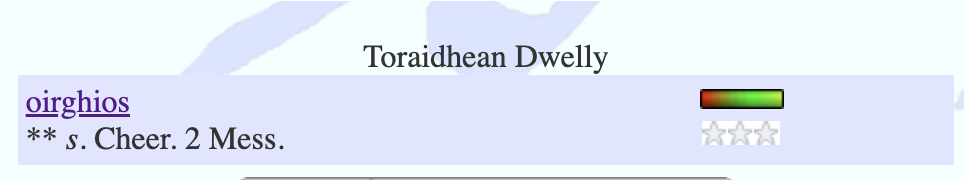
Clicking on the word there will give you even more details, including a link to the original source:
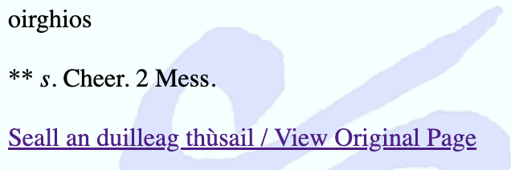
You can use that link to actually see the word in a scanned version of Dwelly:
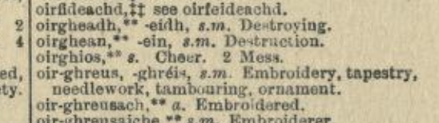
Dictionary
To help play the game, the site also includes a built-in Scrabble Dictionary that you can use to find valid words to play. To enter the dictionary click on the 📖 Dictionary button under the Global Controls section.
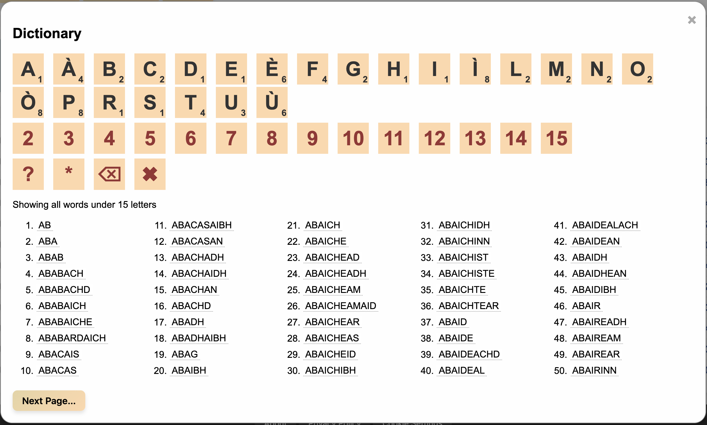
The dictionary has the following features:
- Searching by letters. Clicking on any of the letters (or typing on the keyboard) will start searching for words that start with the selected letters.
- Limiting word length. Clicking on the numbers will limit the search results to words
that are only as long as that number. For example clicking on
3will print letters 2 or 3 characters long. - Wildcard search. Using
?and*you can add wildcards into your search query.?will match a single character, while*will match any amount (including zero).- For example if you want to search for words ending in "
IBH" you could set a search filter as "*IBH" - As another example if you want to search for four letter words starting with "
A" and ending with "S", you can use a search filter like "A??S"", and set the maximum word length to4
- For example if you want to search for words ending in "
- Dictionary link. After searching you can click on each word which will open up Am Faclair Beag with that word selected, so you can check its meaning and whether it's a traditional word, or a more modern one.
Acknowledgements
This website couldn't have been made possible (among others) without the following contributions:
- Tinderbox Games and An Taigh Cèilidh for getting the game out. Buy one in physical form if you can.
- Kevin Scannell for his work on the Scottish Gaelic spellchecker and the initial Scrabble wordlist
- iGàidhlig, and the people behind Am Faclair Beag, the most feature complete Scottish Gaelic online dictionary. Hosting isn't cheap, so feel free to help them out if you can.
- Bria Mason for her Scottish Gaelic classes. If you need tutoring she can likely help
- Everyone in the Intermediate Gaelic Learner class in Midlothian. If you live nearby and want to get help learning Scottish Gaelic it's a perfect place to be.
- The eliot project, a free and open-source Scrabble game engine, whose backend is used to power this site, and the AI players.
- Clipart images for the website are under Freepik's free, attribution based license. Images are from their non-AI generated portfolio.
- Sound effects for the website are under the CC BY-SA 4.0 license, and provided by Kollumos originally made for the Wafrn project
Notes
The website was made by Zsolt Sz. Sz. Raven for Gelion Pictures.
If you like the work you can also buy me a coffee.
The website is licensed under the GPLv3, and it's source code is available at GitHub
Legal note: SCRABBLE® is a registered trademark. All intellectual property rights in and to the game are owned in the U.S.A. by Hasbro Inc., in Canada by Hasbro Canada Corporation and throughout the rest of the world by J.W. Spear & Sons Limited of Maidenhead, Berkshire, England, a subsidiary of Mattel Inc. Mattel and Spear are not affiliated with Hasbro or Hasbro Canada.
This website is not affiliated nor endorsed by Mattel, Hasbro, Tinderbox Games nor iGàidhlig